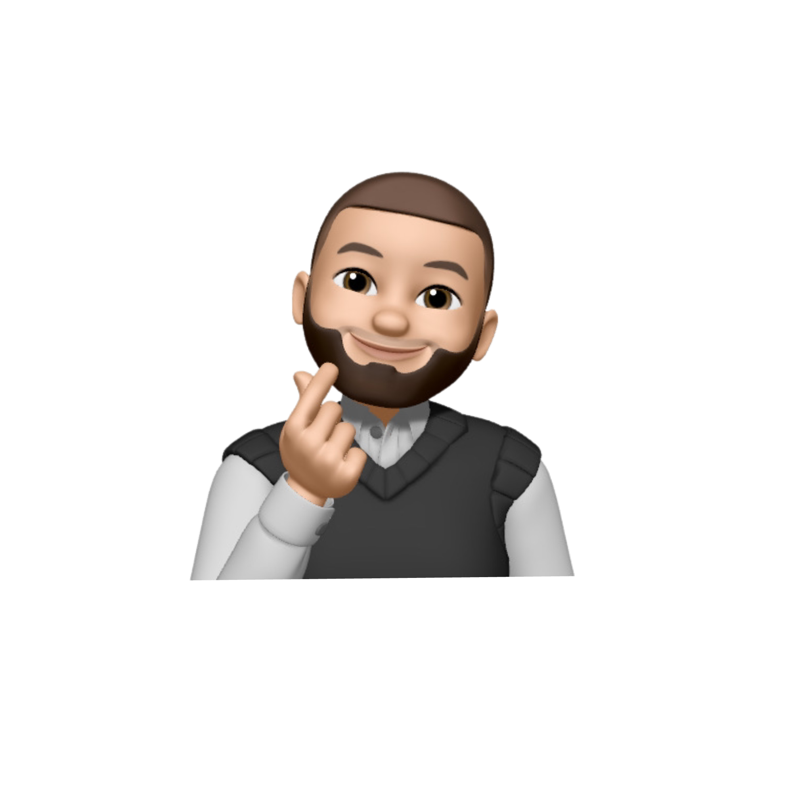

Futur ingénieur en Systèmes Embarqués (ING3, ECE Paris) après un BUT Informatique, et développeur full-stack. Je m'intéresse aux environnements de haute fiabilité — aéronautique, défense, médical, ferroviaire — et je recherche une alternance à partir de septembre 2026.

Après un BUT Informatique à l'IUT de Villetaneuse, je rejoins en septembre 2026 le cycle ingénieur Systèmes Embarqués de l'ECE Paris, en apprentissage. J'y prolonge une culture logicielle solide vers l'électronique, l'embarqué et l'IoT, que j'approfondis déjà en autodidacte.
Je conçois des applications web et mobiles de bout en bout (Node.js, React, Flutter) et je programme en C/C++ et Python. Architecture logicielle, conception d'API REST, sécurité applicative : cette rigueur, je veux la mettre au service de systèmes où la fiabilité n'est pas une option.
Je recherche une alternance dans les industries de pointe (aéronautique, défense, médical, ferroviaire), avec la rigueur, l'esprit critique et le sens du travail en équipe qu'elles exigent.
Mon parcours académique.
Des applications de bout en bout, conçues pour être sécurisées, évolutives et maintenables.
Génération automatisée de documents adaptés à chaque profil, qui réduit fortement le temps de création.
Application testée par un panel d'utilisateurs. Code structuré, documenté et maintenable.
Des langages bas niveau au full-stack, avec une montée en compétence sur l'embarqué et l'IoT.
C/C++, notions d'électronique, de systèmes embarqués et d'IoT ; formation en autodidacte en parallèle du cycle ingénieur ING3
C/C++, Python, Java, JavaScript, PHP, Dart
React, HTML/CSS, Bootstrap, Figma
Node.js, PHP, API REST
SQL, PostgreSQL, MongoDB, Redis, SQLite
Architecture logicielle, conception d'API REST, modélisation de données, architecture multi-tenant, RBAC & sécurité applicative, méthode agile
Notions Windows/Linux, scripting (Python), sensibilisation cybersécurité (CVE, bonnes pratiques)
Pandas, Matplotlib, Power BI, Tableau ; automatisation (n8n, Make, API)
Git/GitHub, Supabase, méthode agile
Un poste en alternance où la rigueur d'ingénierie compte autant que le code.
Alternance en systèmes embarqués, dans le cadre du cycle ingénieur ING3 de l'ECE Paris, à partir de septembre 2026.
Environnements de haute fiabilité : aéronautique, défense, médical, ferroviaire.
Développement full-stack de bout en bout, C/C++ et Python, architecture logicielle, API REST, sécurité applicative (RBAC, JWT), travail en équipe en méthode agile.
Issu d'un BUT Informatique, j'ai des notions en électronique et en embarqué que je consolide en autodidacte, puis avec le cycle ingénieur. Je suis prêt à apprendre vite sur le terrain.
Je recherche une alternance en systèmes embarqués à partir de septembre 2026. N'hésitez pas à me contacter directement.